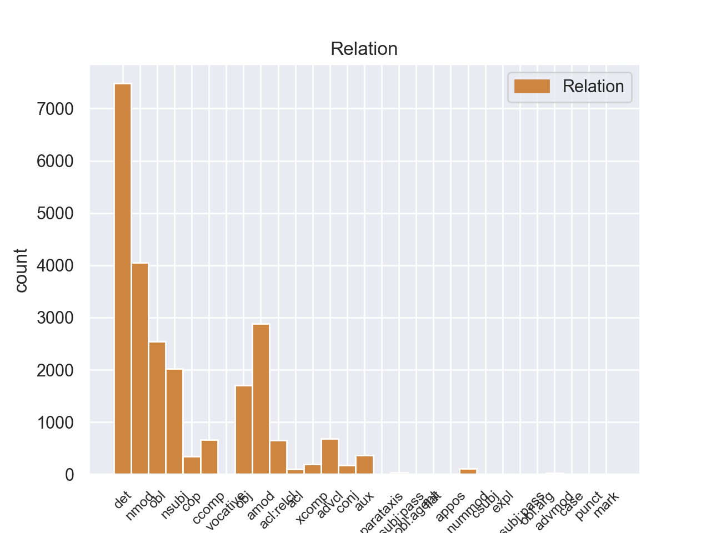
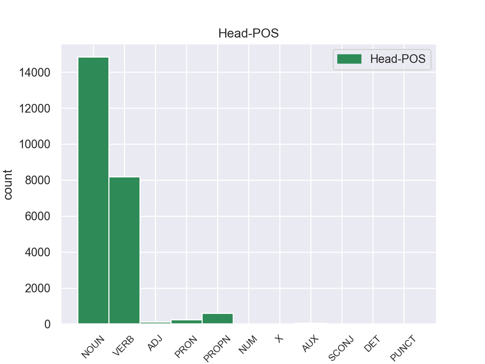
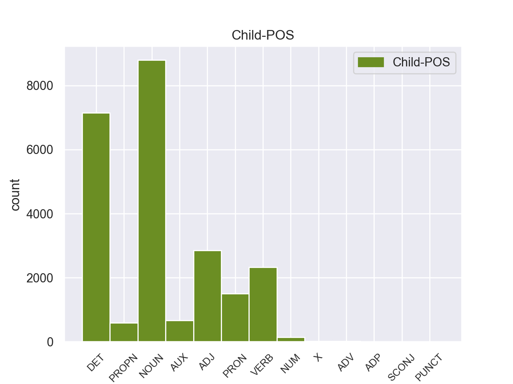

Distribution of features within this leaf



Agreement Rules sorted by frequency.
- When the dependent token is the determiner(det) of the head token,
1 Αυτό _ _ _ _ 0 _ _ _
2 μπορεί _ _ _ _ 0 _ _ _
3 να _ _ _ _ 0 _ _ _
4 μην _ _ _ _ 0 _ _ _
5 οδηγήσει _ _ _ _ 0 _ _ _
6 σ _ _ _ _ 0 _ _ _
7 τη _ _ _ _ 0 _ _ _
8 λήξη _ _ _ _ 0 _ _ _
9 του _ _ _ _ 0 _ _ _
10 εν _ _ _ _ 0 _ _ _
11 λόγω _ _ _ _ 0 _ _ _
12 ζητήματος _ _ _ _ 0 _ _ _
13 αλλά _ _ _ _ 0 _ _ _
14 , _ _ _ _ 0 _ _ _
15 σ _ _ _ _ 0 _ _ _
16 τη _ _ _ _ 0 _ _ _
17 μορφή _ _ _ _ 0 _ _ _
18 υπό _ _ _ _ 0 _ _ _
19 την _ _ _ _ 0 _ _ _
20 οποία _ _ _ _ 0 _ _ _
21 την _ _ _ _ 0 _ _ _
22 λάβαμε _ _ _ _ 0 _ _ _
23 , _ _ _ _ 0 _ _ _
24 αυτή _ _ _ _ 0 _ _ _
25 η _ _ _ _ 0 _ _ _
26 αίτηση _ _ _ _ 0 _ _ _
27 άρσης _ _ _ _ 0 _ _ _
28 της _ _ _ _ 0 _ _ _
29 ασυλίας _ _ _ _ 0 _ _ _
30 ήταν _ _ _ _ 0 _ _ _
31 , _ _ _ _ 0 _ _ _
32 κατά _ _ _ _ 0 _ _ _
33 την _ _ _ _ 0 _ _ _
34 άποψη _ _ _ _ 0 _ _ _
35 της _ _ _ _ 0 _ _ _
36 Επιτροπής _ _ _ _ 0 _ _ _
37 Νομικών _ _ _ _ 0 _ _ _
38 Θεμάτων _ _ _ _ 0 _ _ _
39 , _ _ _ _ 0 _ _ _
40 απαράδεκτη _ _ _ _ 0 _ _ _
41 , _ _ _ _ 0 _ _ _
42 άποψη _ _ _ _ 0 _ _ _
43 την _ _ _ _ 0 _ _ _
44 οποία _ _ _ _ 0 _ _ _
45 συνιστώ _ _ _ _ 0 _ _ _
46 σ _ _ _ _ 0 _ _ _
47 το ο DET _ Case=Acc|Gender=Neut|Number=Sing 48 det _ _
48 Σώμα σώμα NOUN _ Case=Acc|Gender=Neut|Number=Sing 0 _ _ _
49 να _ _ _ _ 0 _ _ _
50 υιοθετήσει _ _ _ _ 0 _ _ _
51 . _ _ _ _ 0 _ _ _
1 Αυτό _ _ _ _ 0 _ _ _
2 μπορεί _ _ _ _ 0 _ _ _
3 να _ _ _ _ 0 _ _ _
4 μην _ _ _ _ 0 _ _ _
5 οδηγήσει _ _ _ _ 0 _ _ _
6 σ _ _ _ _ 0 _ _ _
7 τη _ _ _ _ 0 _ _ _
8 λήξη _ _ _ _ 0 _ _ _
9 του _ _ _ _ 0 _ _ _
10 εν _ _ _ _ 0 _ _ _
11 λόγω _ _ _ _ 0 _ _ _
12 ζητήματος _ _ _ _ 0 _ _ _
13 αλλά _ _ _ _ 0 _ _ _
14 , _ _ _ _ 0 _ _ _
15 σ _ _ _ _ 0 _ _ _
16 τη _ _ _ _ 0 _ _ _
17 μορφή _ _ _ _ 0 _ _ _
18 υπό _ _ _ _ 0 _ _ _
19 την _ _ _ _ 0 _ _ _
20 οποία _ _ _ _ 0 _ _ _
21 την _ _ _ _ 0 _ _ _
22 λάβαμε _ _ _ _ 0 _ _ _
23 , _ _ _ _ 0 _ _ _
24 αυτή _ _ _ _ 0 _ _ _
25 η _ _ _ _ 0 _ _ _
26 αίτηση _ _ _ _ 0 _ _ _
27 άρσης _ _ _ _ 0 _ _ _
28 της _ _ _ _ 0 _ _ _
29 ασυλίας _ _ _ _ 0 _ _ _
30 ήταν _ _ _ _ 0 _ _ _
31 , _ _ _ _ 0 _ _ _
32 κατά _ _ _ _ 0 _ _ _
33 την _ _ _ _ 0 _ _ _
34 άποψη άποψη NOUN _ Case=Acc|Gender=Fem|Number=Sing 0 _ _ _
35 της _ _ _ _ 0 _ _ _
36 Επιτροπής επιτροπής NOUN _ Case=Gen|Gender=Fem|Number=Sing 34 nmod _ _
37 Νομικών _ _ _ _ 0 _ _ _
38 Θεμάτων _ _ _ _ 0 _ _ _
39 , _ _ _ _ 0 _ _ _
40 απαράδεκτη _ _ _ _ 0 _ _ _
41 , _ _ _ _ 0 _ _ _
42 άποψη _ _ _ _ 0 _ _ _
43 την _ _ _ _ 0 _ _ _
44 οποία _ _ _ _ 0 _ _ _
45 συνιστώ _ _ _ _ 0 _ _ _
46 σ _ _ _ _ 0 _ _ _
47 το _ _ _ _ 0 _ _ _
48 Σώμα _ _ _ _ 0 _ _ _
49 να _ _ _ _ 0 _ _ _
50 υιοθετήσει _ _ _ _ 0 _ _ _
51 . _ _ _ _ 0 _ _ _
1 Αυτό _ _ _ _ 0 _ _ _
2 μπορεί _ _ _ _ 0 _ _ _
3 να _ _ _ _ 0 _ _ _
4 μην _ _ _ _ 0 _ _ _
5 οδηγήσει _ _ _ _ 0 _ _ _
6 σ _ _ _ _ 0 _ _ _
7 τη _ _ _ _ 0 _ _ _
8 λήξη _ _ _ _ 0 _ _ _
9 του _ _ _ _ 0 _ _ _
10 εν _ _ _ _ 0 _ _ _
11 λόγω λόγω DET _ Case=Gen|Gender=Masc|Number=Sing 12 amod _ _
12 ζητήματος ζητήματος NOUN _ Case=Acc|Gender=Neut|Number=Sing 0 _ _ _
13 αλλά _ _ _ _ 0 _ _ _
14 , _ _ _ _ 0 _ _ _
15 σ _ _ _ _ 0 _ _ _
16 τη _ _ _ _ 0 _ _ _
17 μορφή _ _ _ _ 0 _ _ _
18 υπό _ _ _ _ 0 _ _ _
19 την _ _ _ _ 0 _ _ _
20 οποία _ _ _ _ 0 _ _ _
21 την _ _ _ _ 0 _ _ _
22 λάβαμε _ _ _ _ 0 _ _ _
23 , _ _ _ _ 0 _ _ _
24 αυτή _ _ _ _ 0 _ _ _
25 η _ _ _ _ 0 _ _ _
26 αίτηση _ _ _ _ 0 _ _ _
27 άρσης _ _ _ _ 0 _ _ _
28 της _ _ _ _ 0 _ _ _
29 ασυλίας _ _ _ _ 0 _ _ _
30 ήταν _ _ _ _ 0 _ _ _
31 , _ _ _ _ 0 _ _ _
32 κατά _ _ _ _ 0 _ _ _
33 την _ _ _ _ 0 _ _ _
34 άποψη _ _ _ _ 0 _ _ _
35 της _ _ _ _ 0 _ _ _
36 Επιτροπής _ _ _ _ 0 _ _ _
37 Νομικών _ _ _ _ 0 _ _ _
38 Θεμάτων _ _ _ _ 0 _ _ _
39 , _ _ _ _ 0 _ _ _
40 απαράδεκτη _ _ _ _ 0 _ _ _
41 , _ _ _ _ 0 _ _ _
42 άποψη _ _ _ _ 0 _ _ _
43 την _ _ _ _ 0 _ _ _
44 οποία _ _ _ _ 0 _ _ _
45 συνιστώ _ _ _ _ 0 _ _ _
46 σ _ _ _ _ 0 _ _ _
47 το _ _ _ _ 0 _ _ _
48 Σώμα _ _ _ _ 0 _ _ _
49 να _ _ _ _ 0 _ _ _
50 υιοθετήσει _ _ _ _ 0 _ _ _
51 . _ _ _ _ 0 _ _ _
1 Αυτό _ _ _ _ 0 _ _ _
2 μπορεί _ _ _ _ 0 _ _ _
3 να _ _ _ _ 0 _ _ _
4 μην _ _ _ _ 0 _ _ _
5 οδηγήσει οδηγήσω VERB _ Aspect=Imp|Mood=Ind|Number=Sing|Person=3|Tense=Pres|VerbForm=Fin|Voice=Act 0 _ _ _
6 σ _ _ _ _ 0 _ _ _
7 τη _ _ _ _ 0 _ _ _
8 λήξη _ _ _ _ 0 _ _ _
9 του _ _ _ _ 0 _ _ _
10 εν _ _ _ _ 0 _ _ _
11 λόγω _ _ _ _ 0 _ _ _
12 ζητήματος _ _ _ _ 0 _ _ _
13 αλλά _ _ _ _ 0 _ _ _
14 , _ _ _ _ 0 _ _ _
15 σ _ _ _ _ 0 _ _ _
16 τη _ _ _ _ 0 _ _ _
17 μορφή _ _ _ _ 0 _ _ _
18 υπό _ _ _ _ 0 _ _ _
19 την _ _ _ _ 0 _ _ _
20 οποία _ _ _ _ 0 _ _ _
21 την _ _ _ _ 0 _ _ _
22 λάβαμε _ _ _ _ 0 _ _ _
23 , _ _ _ _ 0 _ _ _
24 αυτή _ _ _ _ 0 _ _ _
25 η _ _ _ _ 0 _ _ _
26 αίτηση _ _ _ _ 0 _ _ _
27 άρσης _ _ _ _ 0 _ _ _
28 της _ _ _ _ 0 _ _ _
29 ασυλίας _ _ _ _ 0 _ _ _
30 ήταν _ _ _ _ 0 _ _ _
31 , _ _ _ _ 0 _ _ _
32 κατά _ _ _ _ 0 _ _ _
33 την _ _ _ _ 0 _ _ _
34 άποψη άποψη NOUN _ Case=Acc|Gender=Fem|Number=Sing 5 obl _ _
35 της _ _ _ _ 0 _ _ _
36 Επιτροπής _ _ _ _ 0 _ _ _
37 Νομικών _ _ _ _ 0 _ _ _
38 Θεμάτων _ _ _ _ 0 _ _ _
39 , _ _ _ _ 0 _ _ _
40 απαράδεκτη _ _ _ _ 0 _ _ _
41 , _ _ _ _ 0 _ _ _
42 άποψη _ _ _ _ 0 _ _ _
43 την _ _ _ _ 0 _ _ _
44 οποία _ _ _ _ 0 _ _ _
45 συνιστώ _ _ _ _ 0 _ _ _
46 σ _ _ _ _ 0 _ _ _
47 το _ _ _ _ 0 _ _ _
48 Σώμα _ _ _ _ 0 _ _ _
49 να _ _ _ _ 0 _ _ _
50 υιοθετήσει _ _ _ _ 0 _ _ _
51 . _ _ _ _ 0 _ _ _
1 Ευελπιστώ ευελπιστώ VERB _ Aspect=Imp|Mood=Ind|Number=Sing|Person=1|Tense=Pres|VerbForm=Fin|Voice=Act 0 _ _ _
2 ότι _ _ _ _ 0 _ _ _
3 η _ _ _ _ 0 _ _ _
4 απόφαση απόφαση NOUN _ Case=Nom|Gender=Fem|Number=Sing 1 nsubj _ _
5 αυτή _ _ _ _ 0 _ _ _
6 , _ _ _ _ 0 _ _ _
7 συμπεριλαμβανομένης _ _ _ _ 0 _ _ _
8 και _ _ _ _ 0 _ _ _
9 της _ _ _ _ 0 _ _ _
10 αιτιολογικής _ _ _ _ 0 _ _ _
11 έκθεσης _ _ _ _ 0 _ _ _
12 που _ _ _ _ 0 _ _ _
13 την _ _ _ _ 0 _ _ _
14 συνοδεύει _ _ _ _ 0 _ _ _
15 , _ _ _ _ 0 _ _ _
16 θα _ _ _ _ 0 _ _ _
17 διαβιβαστεί _ _ _ _ 0 _ _ _
18 σ _ _ _ _ 0 _ _ _
19 τις _ _ _ _ 0 _ _ _
20 γαλλικές _ _ _ _ 0 _ _ _
21 αρχές _ _ _ _ 0 _ _ _
22 , _ _ _ _ 0 _ _ _
23 εφόσον _ _ _ _ 0 _ _ _
24 υπερψηφιστεί _ _ _ _ 0 _ _ _
25 από _ _ _ _ 0 _ _ _
26 το _ _ _ _ 0 _ _ _
27 Κοινοβούλιο _ _ _ _ 0 _ _ _
28 . _ _ _ _ 0 _ _ _
1 Αυτό _ _ _ _ 0 _ _ _
2 μπορεί _ _ _ _ 0 _ _ _
3 να _ _ _ _ 0 _ _ _
4 μην _ _ _ _ 0 _ _ _
5 οδηγήσει οδηγήσω VERB _ Aspect=Imp|Mood=Ind|Number=Sing|Person=3|Tense=Pres|VerbForm=Fin|Voice=Act 0 _ _ _
6 σ _ _ _ _ 0 _ _ _
7 τη _ _ _ _ 0 _ _ _
8 λήξη _ _ _ _ 0 _ _ _
9 του _ _ _ _ 0 _ _ _
10 εν _ _ _ _ 0 _ _ _
11 λόγω _ _ _ _ 0 _ _ _
12 ζητήματος _ _ _ _ 0 _ _ _
13 αλλά _ _ _ _ 0 _ _ _
14 , _ _ _ _ 0 _ _ _
15 σ _ _ _ _ 0 _ _ _
16 τη _ _ _ _ 0 _ _ _
17 μορφή _ _ _ _ 0 _ _ _
18 υπό _ _ _ _ 0 _ _ _
19 την _ _ _ _ 0 _ _ _
20 οποία _ _ _ _ 0 _ _ _
21 την _ _ _ _ 0 _ _ _
22 λάβαμε _ _ _ _ 0 _ _ _
23 , _ _ _ _ 0 _ _ _
24 αυτή _ _ _ _ 0 _ _ _
25 η _ _ _ _ 0 _ _ _
26 αίτηση _ _ _ _ 0 _ _ _
27 άρσης _ _ _ _ 0 _ _ _
28 της _ _ _ _ 0 _ _ _
29 ασυλίας _ _ _ _ 0 _ _ _
30 ήταν _ _ _ _ 0 _ _ _
31 , _ _ _ _ 0 _ _ _
32 κατά _ _ _ _ 0 _ _ _
33 την _ _ _ _ 0 _ _ _
34 άποψη _ _ _ _ 0 _ _ _
35 της _ _ _ _ 0 _ _ _
36 Επιτροπής _ _ _ _ 0 _ _ _
37 Νομικών _ _ _ _ 0 _ _ _
38 Θεμάτων _ _ _ _ 0 _ _ _
39 , _ _ _ _ 0 _ _ _
40 απαράδεκτη _ _ _ _ 0 _ _ _
41 , _ _ _ _ 0 _ _ _
42 άποψη άποψη NOUN _ Case=Acc|Gender=Fem|Number=Sing 5 obj _ _
43 την _ _ _ _ 0 _ _ _
44 οποία _ _ _ _ 0 _ _ _
45 συνιστώ _ _ _ _ 0 _ _ _
46 σ _ _ _ _ 0 _ _ _
47 το _ _ _ _ 0 _ _ _
48 Σώμα _ _ _ _ 0 _ _ _
49 να _ _ _ _ 0 _ _ _
50 υιοθετήσει _ _ _ _ 0 _ _ _
51 . _ _ _ _ 0 _ _ _
1 Ευελπιστώ _ _ _ _ 0 _ _ _
2 ότι _ _ _ _ 0 _ _ _
3 η _ _ _ _ 0 _ _ _
4 απόφαση _ _ _ _ 0 _ _ _
5 αυτή _ _ _ _ 0 _ _ _
6 , _ _ _ _ 0 _ _ _
7 συμπεριλαμβανομένης _ _ _ _ 0 _ _ _
8 και _ _ _ _ 0 _ _ _
9 της _ _ _ _ 0 _ _ _
10 αιτιολογικής _ _ _ _ 0 _ _ _
11 έκθεσης _ _ _ _ 0 _ _ _
12 που _ _ _ _ 0 _ _ _
13 την _ _ _ _ 0 _ _ _
14 συνοδεύει _ _ _ _ 0 _ _ _
15 , _ _ _ _ 0 _ _ _
16 θα _ _ _ _ 0 _ _ _
17 διαβιβαστεί διαβιβαστεί VERB _ Aspect=Imp|Mood=Ind|Number=Sing|Person=3|Tense=Pres|VerbForm=Fin|Voice=Act 0 _ _ _
18 σ _ _ _ _ 0 _ _ _
19 τις _ _ _ _ 0 _ _ _
20 γαλλικές _ _ _ _ 0 _ _ _
21 αρχές _ _ _ _ 0 _ _ _
22 , _ _ _ _ 0 _ _ _
23 εφόσον _ _ _ _ 0 _ _ _
24 υπερψηφιστεί υπερψηφιστεί VERB _ Aspect=Perf|Mood=Ind|Number=Sing|Person=3|Tense=Past|VerbForm=Fin|Voice=Pass 17 advcl _ _
25 από _ _ _ _ 0 _ _ _
26 το _ _ _ _ 0 _ _ _
27 Κοινοβούλιο _ _ _ _ 0 _ _ _
28 . _ _ _ _ 0 _ _ _
1 Ευελπιστώ ευελπιστώ VERB _ Aspect=Imp|Mood=Ind|Number=Sing|Person=1|Tense=Pres|VerbForm=Fin|Voice=Act 0 _ _ _
2 ότι _ _ _ _ 0 _ _ _
3 η _ _ _ _ 0 _ _ _
4 απόφαση _ _ _ _ 0 _ _ _
5 αυτή _ _ _ _ 0 _ _ _
6 , _ _ _ _ 0 _ _ _
7 συμπεριλαμβανομένης _ _ _ _ 0 _ _ _
8 και _ _ _ _ 0 _ _ _
9 της _ _ _ _ 0 _ _ _
10 αιτιολογικής _ _ _ _ 0 _ _ _
11 έκθεσης _ _ _ _ 0 _ _ _
12 που _ _ _ _ 0 _ _ _
13 την _ _ _ _ 0 _ _ _
14 συνοδεύει _ _ _ _ 0 _ _ _
15 , _ _ _ _ 0 _ _ _
16 θα _ _ _ _ 0 _ _ _
17 διαβιβαστεί διαβιβαστεί VERB _ Aspect=Imp|Mood=Ind|Number=Sing|Person=3|Tense=Pres|VerbForm=Fin|Voice=Act 1 ccomp _ _
18 σ _ _ _ _ 0 _ _ _
19 τις _ _ _ _ 0 _ _ _
20 γαλλικές _ _ _ _ 0 _ _ _
21 αρχές _ _ _ _ 0 _ _ _
22 , _ _ _ _ 0 _ _ _
23 εφόσον _ _ _ _ 0 _ _ _
24 υπερψηφιστεί _ _ _ _ 0 _ _ _
25 από _ _ _ _ 0 _ _ _
26 το _ _ _ _ 0 _ _ _
27 Κοινοβούλιο _ _ _ _ 0 _ _ _
28 . _ _ _ _ 0 _ _ _
1 Το _ _ _ _ 0 _ _ _
2 άρθρο άρθρο NOUN _ Case=Nom|Gender=Fem|Number=Sing 0 _ _ _
3 9 _ _ _ _ 0 _ _ _
4 του _ _ _ _ 0 _ _ _
5 Πρωτοκόλλου _ _ _ _ 0 _ _ _
6 , _ _ _ _ 0 _ _ _
7 όπως _ _ _ _ 0 _ _ _
8 επεσήμανε επεσήμαω VERB _ Aspect=Perf|Mood=Ind|Number=Sing|Person=3|Tense=Past|VerbForm=Fin|Voice=Act 2 acl:relcl _ _
9 με _ _ _ _ 0 _ _ _
10 αυστηρότητα _ _ _ _ 0 _ _ _
11 η _ _ _ _ 0 _ _ _
12 Πρόεδρος _ _ _ _ 0 _ _ _
13 Fontaine _ _ _ _ 0 _ _ _
14 σ _ _ _ _ 0 _ _ _
15 τον _ _ _ _ 0 _ _ _
16 Εισαγγελέα _ _ _ _ 0 _ _ _
17 , _ _ _ _ 0 _ _ _
18 μας _ _ _ _ 0 _ _ _
19 απαλλάσσει _ _ _ _ 0 _ _ _
20 τελείως _ _ _ _ 0 _ _ _
21 από _ _ _ _ 0 _ _ _
22 οποιαδήποτε _ _ _ _ 0 _ _ _
23 νομική _ _ _ _ 0 _ _ _
24 διαδικασία _ _ _ _ 0 _ _ _
25 σε _ _ _ _ 0 _ _ _
26 σχέση _ _ _ _ 0 _ _ _
27 με _ _ _ _ 0 _ _ _
28 την _ _ _ _ 0 _ _ _
29 έκφραση _ _ _ _ 0 _ _ _
30 γνώμης _ _ _ _ 0 _ _ _
31 ή _ _ _ _ 0 _ _ _
32 ψήφου _ _ _ _ 0 _ _ _
33 κατά _ _ _ _ 0 _ _ _
34 την _ _ _ _ 0 _ _ _
35 άσκηση _ _ _ _ 0 _ _ _
36 των _ _ _ _ 0 _ _ _
37 καθηκόντων _ _ _ _ 0 _ _ _
38 μας _ _ _ _ 0 _ _ _
39 ως _ _ _ _ 0 _ _ _
40 μέλη _ _ _ _ 0 _ _ _
41 αυτού _ _ _ _ 0 _ _ _
42 του _ _ _ _ 0 _ _ _
43 Κοινοβουλίου _ _ _ _ 0 _ _ _
44 . _ _ _ _ 0 _ _ _
1 Αυτή _ _ _ _ 0 _ _ _
2 είναι είμαι AUX _ Aspect=Imp|Mood=Ind|Number=Sing|Person=3|Tense=Pres|VerbForm=Fin|Voice=Pass 4 cop _ _
3 η _ _ _ _ 0 _ _ _
4 κατάσταση κατάσταση NOUN _ Case=Acc|Gender=Fem|Number=Sing 0 _ _ _
5 επί _ _ _ _ 0 _ _ _
6 της _ _ _ _ 0 _ _ _
7 οποίας _ _ _ _ 0 _ _ _
8 πρέπει _ _ _ _ 0 _ _ _
9 να _ _ _ _ 0 _ _ _
10 αποφασίσουμε _ _ _ _ 0 _ _ _
11 . _ _ _ _ 0 _ _ _
1 Αυτό _ _ _ _ 0 _ _ _
2 μπορεί μπορεί AUX _ Aspect=Imp|Mood=Ind|Number=Sing|Person=3|Tense=Pres|VerbForm=Fin|Voice=Act 5 aux _ _
3 να _ _ _ _ 0 _ _ _
4 μην _ _ _ _ 0 _ _ _
5 οδηγήσει οδηγήσω VERB _ Aspect=Imp|Mood=Ind|Number=Sing|Person=3|Tense=Pres|VerbForm=Fin|Voice=Act 0 _ _ _
6 σ _ _ _ _ 0 _ _ _
7 τη _ _ _ _ 0 _ _ _
8 λήξη _ _ _ _ 0 _ _ _
9 του _ _ _ _ 0 _ _ _
10 εν _ _ _ _ 0 _ _ _
11 λόγω _ _ _ _ 0 _ _ _
12 ζητήματος _ _ _ _ 0 _ _ _
13 αλλά _ _ _ _ 0 _ _ _
14 , _ _ _ _ 0 _ _ _
15 σ _ _ _ _ 0 _ _ _
16 τη _ _ _ _ 0 _ _ _
17 μορφή _ _ _ _ 0 _ _ _
18 υπό _ _ _ _ 0 _ _ _
19 την _ _ _ _ 0 _ _ _
20 οποία _ _ _ _ 0 _ _ _
21 την _ _ _ _ 0 _ _ _
22 λάβαμε _ _ _ _ 0 _ _ _
23 , _ _ _ _ 0 _ _ _
24 αυτή _ _ _ _ 0 _ _ _
25 η _ _ _ _ 0 _ _ _
26 αίτηση _ _ _ _ 0 _ _ _
27 άρσης _ _ _ _ 0 _ _ _
28 της _ _ _ _ 0 _ _ _
29 ασυλίας _ _ _ _ 0 _ _ _
30 ήταν _ _ _ _ 0 _ _ _
31 , _ _ _ _ 0 _ _ _
32 κατά _ _ _ _ 0 _ _ _
33 την _ _ _ _ 0 _ _ _
34 άποψη _ _ _ _ 0 _ _ _
35 της _ _ _ _ 0 _ _ _
36 Επιτροπής _ _ _ _ 0 _ _ _
37 Νομικών _ _ _ _ 0 _ _ _
38 Θεμάτων _ _ _ _ 0 _ _ _
39 , _ _ _ _ 0 _ _ _
40 απαράδεκτη _ _ _ _ 0 _ _ _
41 , _ _ _ _ 0 _ _ _
42 άποψη _ _ _ _ 0 _ _ _
43 την _ _ _ _ 0 _ _ _
44 οποία _ _ _ _ 0 _ _ _
45 συνιστώ _ _ _ _ 0 _ _ _
46 σ _ _ _ _ 0 _ _ _
47 το _ _ _ _ 0 _ _ _
48 Σώμα _ _ _ _ 0 _ _ _
49 να _ _ _ _ 0 _ _ _
50 υιοθετήσει _ _ _ _ 0 _ _ _
51 . _ _ _ _ 0 _ _ _
1 Με _ _ _ _ 0 _ _ _
2 αυτές _ _ _ _ 0 _ _ _
3 τις _ _ _ _ 0 _ _ _
4 κατηγορίες _ _ _ _ 0 _ _ _
5 , _ _ _ _ 0 _ _ _
6 από _ _ _ _ 0 _ _ _
7 τις _ _ _ _ 0 _ _ _
8 οποίες _ _ _ _ 0 _ _ _
9 η _ _ _ _ 0 _ _ _
10 πρώτη _ _ _ _ 0 _ _ _
11 αφορά _ _ _ _ 0 _ _ _
12 λαθρεμπόριο _ _ _ _ 0 _ _ _
13 όπλων _ _ _ _ 0 _ _ _
14 κλπ. _ _ _ _ 0 _ _ _
15 , _ _ _ _ 0 _ _ _
16 και _ _ _ _ 0 _ _ _
17 βαρύνει _ _ _ _ 0 _ _ _
18 τόσο _ _ _ _ 0 _ _ _
19 τον _ _ _ _ 0 _ _ _
20 κ. _ _ _ _ 0 _ _ _
21 Pasqua _ _ _ _ 0 _ _ _
22 όσο _ _ _ _ 0 _ _ _
23 και _ _ _ _ 0 _ _ _
24 τον _ _ _ _ 0 _ _ _
25 κ. _ _ _ _ 0 _ _ _
26 Marchiani _ _ _ _ 0 _ _ _
27 , _ _ _ _ 0 _ _ _
28 ενώ _ _ _ _ 0 _ _ _
29 η _ _ _ _ 0 _ _ _
30 δεύτερη _ _ _ _ 0 _ _ _
31 στρέφεται _ _ _ _ 0 _ _ _
32 μόνον _ _ _ _ 0 _ _ _
33 εναντίον _ _ _ _ 0 _ _ _
34 του _ _ _ _ 0 _ _ _
35 κ. _ _ _ _ 0 _ _ _
36 Pasqua _ _ _ _ 0 _ _ _
37 , _ _ _ _ 0 _ _ _
38 οι _ _ _ _ 0 _ _ _
39 ανακριτές _ _ _ _ 0 _ _ _
40 δικαστές _ _ _ _ 0 _ _ _
41 ζητούν _ _ _ _ 0 _ _ _
42 την _ _ _ _ 0 _ _ _
43 άρση _ _ _ _ 0 _ _ _
44 της _ _ _ _ 0 _ _ _
45 βουλευτικής _ _ _ _ 0 _ _ _
46 ασυλίας _ _ _ _ 0 _ _ _
47 των _ _ _ _ 0 _ _ _
48 εν _ _ _ _ 0 _ _ _
49 λόγω _ _ _ _ 0 _ _ _
50 δύο _ _ _ _ 0 _ _ _
51 κυρίων _ _ _ _ 0 _ _ _
52 , _ _ _ _ 0 _ _ _
53 προκειμένου _ _ _ _ 0 _ _ _
54 να _ _ _ _ 0 _ _ _
55 τους _ _ _ _ 0 _ _ _
56 επιβληθούν _ _ _ _ 0 _ _ _
57 ορισμένα _ _ _ _ 0 _ _ _
58 μέτρα _ _ _ _ 0 _ _ _
59 δικαστικής _ _ _ _ 0 _ _ _
60 επιτήρησης _ _ _ _ 0 _ _ _
61 : _ _ _ _ 0 _ _ _
62 να _ _ _ _ 0 _ _ _
63 τους _ _ _ _ 0 _ _ _
64 απαγορευθεί _ _ _ _ 0 _ _ _
65 η _ _ _ _ 0 _ _ _
66 επαφή _ _ _ _ 0 _ _ _
67 με _ _ _ _ 0 _ _ _
68 διάφορους _ _ _ _ 0 _ _ _
69 μάρτυρες μάρτυρο NOUN _ Case=Acc|Gender=Masc|Number=Plur 0 _ _ _
70 ή _ _ _ _ 0 _ _ _
71 συγκατηγορουμένους συγκατηγορουμένους NOUN _ Case=Acc|Gender=Masc|Number=Plur 69 conj _ _
72 σ _ _ _ _ 0 _ _ _
73 τις _ _ _ _ 0 _ _ _
74 υποθέσεις _ _ _ _ 0 _ _ _
75 αυτές _ _ _ _ 0 _ _ _
76 και _ _ _ _ 0 _ _ _
77 η _ _ _ _ 0 _ _ _
78 μετάβαση _ _ _ _ 0 _ _ _
79 σε _ _ _ _ 0 _ _ _
80 διάφορες _ _ _ _ 0 _ _ _
81 χώρες _ _ _ _ 0 _ _ _
82 , _ _ _ _ 0 _ _ _
83 καθώς _ _ _ _ 0 _ _ _
84 και _ _ _ _ 0 _ _ _
85 να _ _ _ _ 0 _ _ _
86 τους _ _ _ _ 0 _ _ _
87 επιβληθεί _ _ _ _ 0 _ _ _
88 ενδεχομένως _ _ _ _ 0 _ _ _
89 η _ _ _ _ 0 _ _ _
90 καταβολή _ _ _ _ 0 _ _ _
91 εγγύησης _ _ _ _ 0 _ _ _
92 . _ _ _ _ 0 _ _ _
1 Είναι _ _ _ _ 0 _ _ _
2 σημαντικό _ _ _ _ 0 _ _ _
3 να _ _ _ _ 0 _ _ _
4 υπογραμμίσω _ _ _ _ 0 _ _ _
5 το _ _ _ _ 0 _ _ _
6 γεγονός _ _ _ _ 0 _ _ _
7 ότι _ _ _ _ 0 _ _ _
8 και _ _ _ _ 0 _ _ _
9 οι _ _ _ _ 0 _ _ _
10 δύο _ _ _ _ 0 _ _ _
11 βουλευτές _ _ _ _ 0 _ _ _
12 διατρανώνουν _ _ _ _ 0 _ _ _
13 σθεναρά _ _ _ _ 0 _ _ _
14 την _ _ _ _ 0 _ _ _
15 αθωότητά _ _ _ _ 0 _ _ _
16 τους _ _ _ _ 0 _ _ _
17 και _ _ _ _ 0 _ _ _
18 καταγγέλλουν _ _ _ _ 0 _ _ _
19 αυτό _ _ _ _ 0 _ _ _
20 που _ _ _ _ 0 _ _ _
21 οι _ _ _ _ 0 _ _ _
22 ίδιοι _ _ _ _ 0 _ _ _
23 θεωρούν θεωρούν VERB _ Aspect=Imp|Mood=Ind|Number=Plur|Person=3|Tense=Pres|VerbForm=Fin|Voice=Pass 0 _ _ _
24 καταχρήσεις καταχρήσεις NOUN _ Case=Nom|Gender=Neut|Number=Plur 23 xcomp _ _
25 σ _ _ _ _ 0 _ _ _
26 τη _ _ _ _ 0 _ _ _
27 διαδικασία _ _ _ _ 0 _ _ _
28 δίωξης _ _ _ _ 0 _ _ _
29 . _ _ _ _ 0 _ _ _
1 πρόκειται _ _ _ _ 0 _ _ _
2 για _ _ _ _ 0 _ _ _
3 αυτό _ _ _ _ 0 _ _ _
4 το _ _ _ _ 0 _ _ _
5 οποίο _ _ _ _ 0 _ _ _
6 αποκαλύφθηκε _ _ _ _ 0 _ _ _
7 κατά _ _ _ _ 0 _ _ _
8 τη _ _ _ _ 0 _ _ _
9 διάρκεια _ _ _ _ 0 _ _ _
10 αυτής _ _ _ _ 0 _ _ _
11 της _ _ _ _ 0 _ _ _
12 διαδικασίας _ _ _ _ 0 _ _ _
13 , _ _ _ _ 0 _ _ _
14 ότι _ _ _ _ 0 _ _ _
15 ο _ _ _ _ 0 _ _ _
16 Εισαγγελέας _ _ _ _ 0 _ _ _
17 κάποια _ _ _ _ 0 _ _ _
18 στιγμή _ _ _ _ 0 _ _ _
19 ζήτησε _ _ _ _ 0 _ _ _
20 από _ _ _ _ 0 _ _ _
21 την _ _ _ _ 0 _ _ _
22 Πρόεδρο _ _ _ _ 0 _ _ _
23 του _ _ _ _ 0 _ _ _
24 Σώματος _ _ _ _ 0 _ _ _
25 , _ _ _ _ 0 _ _ _
26 την _ _ _ _ 0 _ _ _
27 προκάτοχό _ _ _ _ 0 _ _ _
28 σας _ _ _ _ 0 _ _ _
29 , _ _ _ _ 0 _ _ _
30 λεπτομέρειες _ _ _ _ 0 _ _ _
31 για _ _ _ _ 0 _ _ _
32 την _ _ _ _ 0 _ _ _
33 ψήφο _ _ _ _ 0 _ _ _
34 που _ _ _ _ 0 _ _ _
35 έχουν _ _ _ _ 0 _ _ _
36 δώσει _ _ _ _ 0 _ _ _
37 οι _ _ _ _ 0 _ _ _
38 δύο δος NUM _ Case=Acc|Gender=Masc|Number=Plur 40 nummod _ _
39 συγκεκριμένοι _ _ _ _ 0 _ _ _
40 βουλευτές βουλευτές NOUN _ Case=Nom|Gender=Masc|Number=Plur 0 _ _ _
41 προκειμένου _ _ _ _ 0 _ _ _
42 να _ _ _ _ 0 _ _ _
43 διευκρινιστεί _ _ _ _ 0 _ _ _
44 περαιτέρω _ _ _ _ 0 _ _ _
45 η _ _ _ _ 0 _ _ _
46 πιθανότητα _ _ _ _ 0 _ _ _
47 να _ _ _ _ 0 _ _ _
48 είχαν _ _ _ _ 0 _ _ _
49 ασκήσει _ _ _ _ 0 _ _ _
50 αθέμιτη _ _ _ _ 0 _ _ _
51 επιρροή _ _ _ _ 0 _ _ _
52 . _ _ _ _ 0 _ _ _
1 Τόσο _ _ _ _ 0 _ _ _
2 το _ _ _ _ 0 _ _ _
3 ζήτημα _ _ _ _ 0 _ _ _
4 της _ _ _ _ 0 _ _ _
5 ασυλίας _ _ _ _ 0 _ _ _
6 όσο _ _ _ _ 0 _ _ _
7 και _ _ _ _ 0 _ _ _
8 η _ _ _ _ 0 _ _ _
9 αίτηση _ _ _ _ 0 _ _ _
10 για _ _ _ _ 0 _ _ _
11 άρση _ _ _ _ 0 _ _ _
12 της _ _ _ _ 0 _ _ _
13 έχουν _ _ _ _ 0 _ _ _
14 σχέση σχέση NOUN _ Case=Acc|Gender=Fem|Number=Sing 0 _ _ _
15 μόνο _ _ _ _ 0 _ _ _
16 με _ _ _ _ 0 _ _ _
17 το _ _ _ _ 0 _ _ _
18 εάν _ _ _ _ 0 _ _ _
19 το _ _ _ _ 0 _ _ _
20 Δικαστήριο _ _ _ _ 0 _ _ _
21 μπορεί _ _ _ _ 0 _ _ _
22 να _ _ _ _ 0 _ _ _
23 εκδώσει εκδώσω VERB _ Aspect=Perf|Mood=Ind|Number=Sing|Person=3|VerbForm=Fin|Voice=Act 14 acl _ _
24 δεσμευτικά _ _ _ _ 0 _ _ _
25 βουλεύματα _ _ _ _ 0 _ _ _
26 για _ _ _ _ 0 _ _ _
27 τον _ _ _ _ 0 _ _ _
28 περιορισμό _ _ _ _ 0 _ _ _
29 της _ _ _ _ 0 _ _ _
30 ελεύθερης _ _ _ _ 0 _ _ _
31 μετακίνησης _ _ _ _ 0 _ _ _
32 των _ _ _ _ 0 _ _ _
33 βουλευτών _ _ _ _ 0 _ _ _
34 του _ _ _ _ 0 _ _ _
35 Ευρωπαϊκού _ _ _ _ 0 _ _ _
36 Κοινοβουλίου _ _ _ _ 0 _ _ _
37 ή _ _ _ _ 0 _ _ _
38 την _ _ _ _ 0 _ _ _
39 ελευθερία _ _ _ _ 0 _ _ _
40 τους _ _ _ _ 0 _ _ _
41 να _ _ _ _ 0 _ _ _
42 έρχονται _ _ _ _ 0 _ _ _
43 σε _ _ _ _ 0 _ _ _
44 επικοινωνία _ _ _ _ 0 _ _ _
45 με _ _ _ _ 0 _ _ _
46 άλλα _ _ _ _ 0 _ _ _
47 πρόσωπα _ _ _ _ 0 _ _ _
48 . _ _ _ _ 0 _ _ _
1 Τέλος _ _ _ _ 0 _ _ _
2 σ _ _ _ _ 0 _ _ _
3 το _ _ _ _ 0 _ _ _
4 Ανάκτορο _ _ _ _ 0 _ _ _
5 Αγίων _ _ _ _ 0 _ _ _
6 Μιχαήλ _ _ _ _ 0 _ _ _
7 και _ _ _ _ 0 _ _ _
8 Γεωργίου _ _ _ _ 0 _ _ _
9 που που PRON _ Case=Nom|Gender=Fem|Number=Plur|Person=3|PronType=Rel 10 nsubj:pass _ _
10 χρησίμευε χρησίμεω VERB _ Aspect=Imp|Mood=Ind|Number=Plur|Person=3|Tense=Pres|VerbForm=Fin|Voice=Pass 0 _ _ _
11 ως _ _ _ _ 0 _ _ _
12 έδρα _ _ _ _ 0 _ _ _
13 του _ _ _ _ 0 _ _ _
14 Μοναστηριακού _ _ _ _ 0 _ _ _
15 Τάγματος _ _ _ _ 0 _ _ _
16 των _ _ _ _ 0 _ _ _
17 Αγίου _ _ _ _ 0 _ _ _
18 Γεωργίου _ _ _ _ 0 _ _ _
19 και _ _ _ _ 0 _ _ _
20 Μιχαήλ _ _ _ _ 0 _ _ _
21 βρίσκονται _ _ _ _ 0 _ _ _
22 αξιόλογα _ _ _ _ 0 _ _ _
23 δείγματα _ _ _ _ 0 _ _ _
24 ασιατικής _ _ _ _ 0 _ _ _
25 τέχνης _ _ _ _ 0 _ _ _
26 . _ _ _ _ 0 _ _ _
1 Η _ _ _ _ 0 _ _ _
2 Μπενφίκα _ _ _ _ 0 _ _ _
3 ήταν _ _ _ _ 0 _ _ _
4 πιο _ _ _ _ 0 _ _ _
5 επιθετική επιθετική ADJ _ Case=Nom|Gender=Fem|Number=Sing 16 advmod _ _
6 και _ _ _ _ 0 _ _ _
7 καλύτερη _ _ _ _ 0 _ _ _
8 σ _ _ _ _ 0 _ _ _
9 το _ _ _ _ 0 _ _ _
10 πρώτο _ _ _ _ 0 _ _ _
11 ημίχρονο _ _ _ _ 0 _ _ _
12 , _ _ _ _ 0 _ _ _
13 με _ _ _ _ 0 _ _ _
14 αποτέλεσμα _ _ _ _ 0 _ _ _
15 να _ _ _ _ 0 _ _ _
16 ανοίξει ανοίξει VERB _ Aspect=Perf|Mood=Ind|Number=Sing|Person=3|VerbForm=Fin|Voice=Act 0 _ _ _
17 το _ _ _ _ 0 _ _ _
18 σκορ _ _ _ _ 0 _ _ _
19 σ _ _ _ _ 0 _ _ _
20 το _ _ _ _ 0 _ _ _
21 πρώτο _ _ _ _ 0 _ _ _
22 λεπτό _ _ _ _ 0 _ _ _
23 των _ _ _ _ 0 _ _ _
24 καθυστερήσεων _ _ _ _ 0 _ _ _
25 , _ _ _ _ 0 _ _ _
26 χάρη _ _ _ _ 0 _ _ _
27 σ _ _ _ _ 0 _ _ _
28 τον _ _ _ _ 0 _ _ _
29 Μάξι _ _ _ _ 0 _ _ _
30 Περέιρα _ _ _ _ 0 _ _ _
31 . _ _ _ _ 0 _ _ _
1 Τα _ _ _ _ 0 _ _ _
2 ευρωπαϊκά _ _ _ _ 0 _ _ _
3 πολεμικά _ _ _ _ 0 _ _ _
4 χτύπησαν _ _ _ _ 0 _ _ _
5 με _ _ _ _ 0 _ _ _
6 τα _ _ _ _ 0 _ _ _
7 πυροβόλα _ _ _ _ 0 _ _ _
8 τους _ _ _ _ 0 _ _ _
9 , _ _ _ _ 0 _ _ _
10 τους _ _ _ _ 0 _ _ _
11 επαναστάτες _ _ _ _ 0 _ _ _
12 σ _ _ _ _ 0 _ _ _
13 το _ _ _ _ 0 _ _ _
14 Ακρωτήρι _ _ _ _ 0 _ _ _
15 , _ _ _ _ 0 _ _ _
16 ρίχνοντας _ _ _ _ 0 _ _ _
17 τη _ _ _ _ 0 _ _ _
18 σημαία _ _ _ _ 0 _ _ _
19 που _ _ _ _ 0 _ _ _
20 υψώθηκε _ _ _ _ 0 _ _ _
21 αμέσως _ _ _ _ 0 _ _ _
22 πάλι _ _ _ _ 0 _ _ _
23 υπό _ _ _ _ 0 _ _ _
24 τις _ _ _ _ 0 _ _ _
25 θυελλώδεις _ _ _ _ 0 _ _ _
26 ζητωκραυγές _ _ _ _ 0 _ _ _
27 των _ _ _ _ 0 _ _ _
28 πληρωμάτων _ _ _ _ 0 _ _ _
29 των _ _ _ _ 0 _ _ _
30 ελληνικών _ _ _ _ 0 _ _ _
31 πολεμικών _ _ _ _ 0 _ _ _
32 που _ _ _ _ 0 _ _ _
33 ναυλοχούσαν _ _ _ _ 0 _ _ _
34 στ' _ _ _ _ 0 _ _ _
35 ανοιχτά _ _ _ _ 0 _ _ _
36 αλλά _ _ _ _ 0 _ _ _
37 δεν _ _ _ _ 0 _ _ _
38 μπορούσαν _ _ _ _ 0 _ _ _
39 να _ _ _ _ 0 _ _ _
40 επέμβουν _ _ _ _ 0 _ _ _
41 ενώ _ _ _ _ 0 _ _ _
42 σ _ _ _ _ 0 _ _ _
43 το _ _ _ _ 0 _ _ _
44 θωρηκτό _ _ _ _ 0 _ _ _
45 " " NOUN _ Case=Acc|Gender=Neut|Number=Sing 46 punct _ _
46 Ύδρα ύδρα NOUN _ Case=Acc|Gender=Neut|Number=Sing 0 _ _ _
47 " _ _ _ _ 0 _ _ _
48 γινόταν _ _ _ _ 0 _ _ _
49 ανάκρουση _ _ _ _ 0 _ _ _
50 του _ _ _ _ 0 _ _ _
51 Εθνικού _ _ _ _ 0 _ _ _
52 μας _ _ _ _ 0 _ _ _
53 Ύμνου _ _ _ _ 0 _ _ _
54 . _ _ _ _ 0 _ _ _
1 Το _ _ _ _ 0 _ _ _
2 Αρκάνσας _ _ _ _ 0 _ _ _
3 και _ _ _ _ 0 _ _ _
4 το _ _ _ _ 0 _ _ _
5 Μισισιπή _ _ _ _ 0 _ _ _
6 ήταν _ _ _ _ 0 _ _ _
7 οι _ _ _ _ 0 _ _ _
8 Πολιτείες _ _ _ _ 0 _ _ _
9 που _ _ _ _ 0 _ _ _
10 επλήγησαν πλήττω VERB VERB Aspect=Perf|Mood=Ind|Number=Plur|Person=3|Tense=Past|VerbForm=Fin|Voice=Pass 0 _ _ _
11 περισσότερο _ _ _ _ 0 _ _ _
12 από _ _ _ _ 0 _ _ _
13 τα _ _ _ _ 0 _ _ _
14 ακραία _ _ _ _ 0 _ _ _
15 καιρικά _ _ _ _ 0 _ _ _
16 φαινόμενα φαινόμενο NOUN NOUN Case=Acc|Gender=Neut|Number=Plur 10 obl:agent _ SpaceAfter=No
17 . _ _ _ _ 0 _ _ _
1 Το _ _ _ _ 0 _ _ _
2 πάρκο _ _ _ _ 0 _ _ _
3 απλώνεται _ _ _ _ 0 _ _ _
4 σε _ _ _ _ 0 _ _ _
5 θαλάσσια _ _ _ _ 0 _ _ _
6 περιοχή _ _ _ _ 0 _ _ _
7 2.200 _ _ _ _ 0 _ _ _
8 τετραγωνικών _ _ _ _ 0 _ _ _
9 χιλιομέτρων _ _ _ _ 0 _ _ _
10 βόρεια _ _ _ _ 0 _ _ _
11 της _ _ _ _ 0 _ _ _
12 Αλοννήσου _ _ _ _ 0 _ _ _
13 και _ _ _ _ 0 _ _ _
14 περιλαμβάνει _ _ _ _ 0 _ _ _
15 - _ _ _ _ 0 _ _ _
16 εκτός _ _ _ _ 0 _ _ _
17 από _ _ _ _ 0 _ _ _
18 την _ _ _ _ 0 _ _ _
19 Αλόννησο _ _ _ _ 0 _ _ _
20 - _ _ _ _ 0 _ _ _
21 τα _ _ _ _ 0 _ _ _
22 ακατοίκητα _ _ _ _ 0 _ _ _
23 νησιά _ _ _ _ 0 _ _ _
24 και _ _ _ _ 0 _ _ _
25 τις _ _ _ _ 0 _ _ _
26 βραχονησίδες _ _ _ _ 0 _ _ _
27 Περιστέρα _ _ _ _ 0 _ _ _
28 , _ _ _ _ 0 _ _ _
29 Δύο _ _ _ _ 0 _ _ _
30 Αδελφοί _ _ _ _ 0 _ _ _
31 , _ _ _ _ 0 _ _ _
32 Κυρά Κυρά NOUN _ Case=Gen|Gender=Fem|Number=Sing 0 _ _ _
33 Παναγιά Παναγιά PROPN _ Case=Gen|Gender=Fem|Number=Sing 32 flat _ _
34 , _ _ _ _ 0 _ _ _
35 Παππούς _ _ _ _ 0 _ _ _
36 , _ _ _ _ 0 _ _ _
37 Σκάντουρα _ _ _ _ 0 _ _ _
38 , _ _ _ _ 0 _ _ _
39 Γιούρα _ _ _ _ 0 _ _ _
40 , _ _ _ _ 0 _ _ _
41 Ψαθούρα _ _ _ _ 0 _ _ _
42 , _ _ _ _ 0 _ _ _
43 Πιπέρι _ _ _ _ 0 _ _ _
44 . _ _ _ _ 0 _ _ _
1 Κύριε κύριε ADJ _ Case=Nom|Gender=Masc|Number=Plur 2 vocative _ _
2 Πρόεδρε πρόεδρε NOUN _ Case=Nom|Gender=Masc|Number=Plur 0 _ _ _
3 , _ _ _ _ 0 _ _ _
4 κύριε _ _ _ _ 0 _ _ _
5 Προεδρεύοντα _ _ _ _ 0 _ _ _
6 του _ _ _ _ 0 _ _ _
7 Συμβουλίου _ _ _ _ 0 _ _ _
8 , _ _ _ _ 0 _ _ _
9 κύριε _ _ _ _ 0 _ _ _
10 Πρόεδρε _ _ _ _ 0 _ _ _
11 της _ _ _ _ 0 _ _ _
12 Επιτροπής _ _ _ _ 0 _ _ _
13 , _ _ _ _ 0 _ _ _
14 κυρίες _ _ _ _ 0 _ _ _
15 και _ _ _ _ 0 _ _ _
16 κύριοι _ _ _ _ 0 _ _ _
17 , _ _ _ _ 0 _ _ _
18 καταρχάς _ _ _ _ 0 _ _ _
19 , _ _ _ _ 0 _ _ _
20 ευχαριστώ _ _ _ _ 0 _ _ _
21 την _ _ _ _ 0 _ _ _
22 ισπανική _ _ _ _ 0 _ _ _
23 Προεδρία _ _ _ _ 0 _ _ _
24 για _ _ _ _ 0 _ _ _
25 την _ _ _ _ 0 _ _ _
26 ευθύτητα _ _ _ _ 0 _ _ _
27 με _ _ _ _ 0 _ _ _
28 την _ _ _ _ 0 _ _ _
29 οποία _ _ _ _ 0 _ _ _
30 παρουσιάζεται _ _ _ _ 0 _ _ _
31 εδώ _ _ _ _ 0 _ _ _
32 , _ _ _ _ 0 _ _ _
33 ακολουθώντας _ _ _ _ 0 _ _ _
34 κάτι _ _ _ _ 0 _ _ _
35 που _ _ _ _ 0 _ _ _
36 αποτελεί _ _ _ _ 0 _ _ _
37 πλέον _ _ _ _ 0 _ _ _
38 έθιμο _ _ _ _ 0 _ _ _
39 , _ _ _ _ 0 _ _ _
40 και _ _ _ _ 0 _ _ _
41 επισημαίνω _ _ _ _ 0 _ _ _
42 ότι _ _ _ _ 0 _ _ _
43 έχουμε _ _ _ _ 0 _ _ _
44 περάσει _ _ _ _ 0 _ _ _
45 τον _ _ _ _ 0 _ _ _
46 ισημερινό _ _ _ _ 0 _ _ _
47 της _ _ _ _ 0 _ _ _
48 νομοθετικής _ _ _ _ 0 _ _ _
49 περιόδου _ _ _ _ 0 _ _ _
50 με _ _ _ _ 0 _ _ _
51 μια _ _ _ _ 0 _ _ _
52 σαφώς _ _ _ _ 0 _ _ _
53 συντηρητική _ _ _ _ 0 _ _ _
54 στροφή _ _ _ _ 0 _ _ _
55 σ _ _ _ _ 0 _ _ _
56 το _ _ _ _ 0 _ _ _
57 Συμβούλιο _ _ _ _ 0 _ _ _
58 , _ _ _ _ 0 _ _ _
59 το _ _ _ _ 0 _ _ _
60 οποίο _ _ _ _ 0 _ _ _
61 , _ _ _ _ 0 _ _ _
62 κύριε _ _ _ _ 0 _ _ _
63 Πρόεδρε _ _ _ _ 0 _ _ _
64 , _ _ _ _ 0 _ _ _
65 ανακόπτεται _ _ _ _ 0 _ _ _
66 από _ _ _ _ 0 _ _ _
67 την _ _ _ _ 0 _ _ _
68 ιδιότητά _ _ _ _ 0 _ _ _
69 σας _ _ _ _ 0 _ _ _
70 ως _ _ _ _ 0 _ _ _
71 Προέδρου _ _ _ _ 0 _ _ _
72 της _ _ _ _ 0 _ _ _
73 ΧΔΔ _ _ _ _ 0 _ _ _
74 - _ _ _ _ 0 _ _ _
75 της _ _ _ _ 0 _ _ _
76 κεντρώας _ _ _ _ 0 _ _ _
77 δημοκρατικής _ _ _ _ 0 _ _ _
78 διεθνούς _ _ _ _ 0 _ _ _
79 , _ _ _ _ 0 _ _ _
80 για _ _ _ _ 0 _ _ _
81 εσάς _ _ _ _ 0 _ _ _
82 , _ _ _ _ 0 _ _ _
83 χριστιανοδημοκρατικής _ _ _ _ 0 _ _ _
84 διεθνούς _ _ _ _ 0 _ _ _
85 για _ _ _ _ 0 _ _ _
86 τον _ _ _ _ 0 _ _ _
87 κ. _ _ _ _ 0 _ _ _
88 Poettering _ _ _ _ 0 _ _ _
89 · _ _ _ _ 0 _ _ _
1 Αξιωματούχοι _ _ _ _ 0 _ _ _
2 της _ _ _ _ 0 _ _ _
3 Υεμένης _ _ _ _ 0 _ _ _
4 και _ _ _ _ 0 _ _ _
5 γιατροί _ _ _ _ 0 _ _ _
6 ανέφεραν _ _ _ _ 0 _ _ _
7 ότι _ _ _ _ 0 _ _ _
8 « _ _ _ _ 0 _ _ _
9 άγριες _ _ _ _ 0 _ _ _
10 συμπλοκές _ _ _ _ 0 _ _ _
11 μεταξύ μεταξύ ADP _ Case=Gen|Definite=Def|Gender=Masc|Number=Plur|PronType=Art 13 case _ _
12 κυβερνητικών _ _ _ _ 0 _ _ _
13 δυνάμεων δυνάμεω NOUN _ Case=Gen|Gender=Fem|Number=Plur 0 _ _ _
14 και _ _ _ _ 0 _ _ _
15 μαχητών _ _ _ _ 0 _ _ _
16 της _ _ _ _ 0 _ _ _
17 Αλ _ _ _ _ 0 _ _ _
18 Κάιντα _ _ _ _ 0 _ _ _
19 σ _ _ _ _ 0 _ _ _
20 το _ _ _ _ 0 _ _ _
21 νότο _ _ _ _ 0 _ _ _
22 της _ _ _ _ 0 _ _ _
23 χώρας _ _ _ _ 0 _ _ _
24 είχαν _ _ _ _ 0 _ _ _
25 σαν _ _ _ _ 0 _ _ _
26 αποτέλεσμα _ _ _ _ 0 _ _ _
27 να _ _ _ _ 0 _ _ _
28 χάσουν _ _ _ _ 0 _ _ _
29 την _ _ _ _ 0 _ _ _
30 ζωή _ _ _ _ 0 _ _ _
31 τους _ _ _ _ 0 _ _ _
32 35 _ _ _ _ 0 _ _ _
33 στρατιώτες _ _ _ _ 0 _ _ _
34 και _ _ _ _ 0 _ _ _
35 20 _ _ _ _ 0 _ _ _
36 ένοπλοι _ _ _ _ 0 _ _ _
37 » _ _ _ _ 0 _ _ _
38 . _ _ _ _ 0 _ _ _
1 Συνεπώς _ _ _ _ 0 _ _ _
2 ήταν _ _ _ _ 0 _ _ _
3 επόμενο _ _ _ _ 0 _ _ _
4 , _ _ _ _ 0 _ _ _
5 σ _ _ _ _ 0 _ _ _
6 το _ _ _ _ 0 _ _ _
7 διάβα _ _ _ _ 0 _ _ _
8 της _ _ _ _ 0 _ _ _
9 Ιστορίας _ _ _ _ 0 _ _ _
10 , _ _ _ _ 0 _ _ _
11 πολλοί _ _ _ _ 0 _ _ _
12 λαοί λαός NOUN NOUN Case=Nom|Gender=Masc|Number=Plur 0 _ _ _
13 , _ _ _ _ 0 _ _ _
14 παλαιότερα _ _ _ _ 0 _ _ _
15 Πέρσες Πέρσης PROPN PROPN Case=Nom|Gender=Masc|Number=Plur 12 appos _ SpaceAfter=No
16 , _ _ _ _ 0 _ _ _
17 Ρωμαίοι _ _ _ _ 0 _ _ _
18 , _ _ _ _ 0 _ _ _
19 Βυζαντινοί _ _ _ _ 0 _ _ _
20 , _ _ _ _ 0 _ _ _
21 και _ _ _ _ 0 _ _ _
22 σ _ _ _ _ 0 _ _ _
23 τα _ _ _ _ 0 _ _ _
24 νεότερα _ _ _ _ 0 _ _ _
25 χρόνια _ _ _ _ 0 _ _ _
26 Βούλγαροι _ _ _ _ 0 _ _ _
27 , _ _ _ _ 0 _ _ _
28 Σέρβοι _ _ _ _ 0 _ _ _
29 και _ _ _ _ 0 _ _ _
30 Τούρκοι _ _ _ _ 0 _ _ _
31 να _ _ _ _ 0 _ _ _
32 προσπαθούσαν _ _ _ _ 0 _ _ _
33 να _ _ _ _ 0 _ _ _
34 κυριαρχούν _ _ _ _ 0 _ _ _
35 του _ _ _ _ 0 _ _ _
36 χώρου _ _ _ _ 0 _ _ _
37 , _ _ _ _ 0 _ _ _
38 σε _ _ _ _ 0 _ _ _
39 βάρος _ _ _ _ 0 _ _ _
40 πάντα _ _ _ _ 0 _ _ _
41 των _ _ _ _ 0 _ _ _
42 γηγενών _ _ _ _ 0 _ _ _
43 κατοίκων _ _ _ _ 0 _ _ _
44 . _ _ _ _ 0 _ _ _
1 Ωστόσο _ _ _ _ 0 _ _ _
2 , _ _ _ _ 0 _ _ _
3 είναι _ _ _ _ 0 _ _ _
4 λυπηρό λυπηρό ADJ _ Aspect=Imp|Mood=Ind|Number=Sing|Person=1|Tense=Pres|VerbForm=Fin|Voice=Act 0 _ _ _
5 το _ _ _ _ 0 _ _ _
6 γεγονός γεγονός NOUN _ Case=Acc|Gender=Neut|Number=Sing 4 mark _ _
7 ότι _ _ _ _ 0 _ _ _
8 η _ _ _ _ 0 _ _ _
9 αργοπορημένη _ _ _ _ 0 _ _ _
10 σύναψη _ _ _ _ 0 _ _ _
11 νέων _ _ _ _ 0 _ _ _
12 συμβάσεων _ _ _ _ 0 _ _ _
13 καθυστέρησε _ _ _ _ 0 _ _ _
14 τις _ _ _ _ 0 _ _ _
15 πληρωμές _ _ _ _ 0 _ _ _
16 , _ _ _ _ 0 _ _ _
17 ιδίως _ _ _ _ 0 _ _ _
18 ως _ _ _ _ 0 _ _ _
19 προς _ _ _ _ 0 _ _ _
20 τη _ _ _ _ 0 _ _ _
21 δράση _ _ _ _ 0 _ _ _
22 COMENIUS _ _ _ _ 0 _ _ _
23 . _ _ _ _ 0 _ _ _
1 Συρία Συρία PROPN PROPN Case=Nom|Gender=Fem|Number=Sing 0 _ _ _
2 : _ _ _ _ 0 _ _ _
3 H _ _ _ _ 0 _ _ _
4 επικεφαλής _ _ _ _ 0 _ _ _
5 των _ _ _ _ 0 _ _ _
6 ανθρωπιστικών _ _ _ _ 0 _ _ _
7 υπηρεσιών _ _ _ _ 0 _ _ _
8 του _ _ _ _ 0 _ _ _
9 ΟΗΕ _ _ _ _ 0 _ _ _
10 μπήκε μπαίνω VERB VERB Aspect=Perf|Mood=Ind|Number=Sing|Person=3|Tense=Past|VerbForm=Fin|Voice=Act 1 parataxis _ _
11 σ _ _ _ _ 0 _ _ _
12 την _ _ _ _ 0 _ _ _
13 Μπάμπα _ _ _ _ 0 _ _ _
14 Άμρ _ _ _ _ 0 _ _ _
1 Ποτέ _ _ _ _ 0 _ _ _
2 δεν _ _ _ _ 0 _ _ _
3 ακούστηκαν _ _ _ _ 0 _ _ _
4 παράπονα _ _ _ _ 0 _ _ _
5 ότι _ _ _ _ 0 _ _ _
6 η _ _ _ _ 0 _ _ _
7 Επιτροπή _ _ _ _ 0 _ _ _
8 επιχείρησε _ _ _ _ 0 _ _ _
9 κατ' _ _ _ _ 0 _ _ _
10 οιονδήποτε _ _ _ _ 0 _ _ _
11 τρόπο _ _ _ _ 0 _ _ _
12 να _ _ _ _ 0 _ _ _
13 επηρεάσει _ _ _ _ 0 _ _ _
14 αποτελέσματα _ _ _ _ 0 _ _ _
15 ελέγχων _ _ _ _ 0 _ _ _
16 της _ _ _ _ 0 _ _ _
17 OLAF _ _ _ _ 0 _ _ _
18 , _ _ _ _ 0 _ _ _
19 και _ _ _ _ 0 _ _ _
20 θέλω _ _ _ _ 0 _ _ _
21 να _ _ _ _ 0 _ _ _
22 το εγώ PRON PRON Case=Acc|Gender=Neut|Number=Sing|Person=3|PronType=Prs 23 expl _ _
23 τονίσω τονίζω VERB VERB Aspect=Perf|Mood=Ind|Number=Sing|Person=1|VerbForm=Fin|Voice=Act 0 _ _ _
24 αυτό _ _ _ _ 0 _ _ _
25 . _ _ _ _ 0 _ _ _
1 Είναι _ _ _ _ 0 _ _ _
2 εξαιρετικά _ _ _ _ 0 _ _ _
3 δύσκολο δύσκολος ADJ ADJ Case=Nom|Gender=Neut|Number=Sing 0 _ _ _
4 να _ _ _ _ 0 _ _ _
5 αξιολογηθεί αξιολογώ VERB VERB Aspect=Perf|Mood=Ind|Number=Sing|Person=3|VerbForm=Fin|Voice=Pass 3 csubj _ _
6 το _ _ _ _ 0 _ _ _
7 πρόγραμμα _ _ _ _ 0 _ _ _
8 ως _ _ _ _ 0 _ _ _
9 προς _ _ _ _ 0 _ _ _
10 τη _ _ _ _ 0 _ _ _
11 συμμετοχή _ _ _ _ 0 _ _ _
12 των _ _ _ _ 0 _ _ _
13 δύο _ _ _ _ 0 _ _ _
14 φύλων _ _ _ _ 0 _ _ _
15 σε _ _ _ _ 0 _ _ _
16 αυτό _ _ _ _ 0 _ _ _
17 . _ _ _ _ 0 _ _ _
1 Για _ _ _ _ 0 _ _ _
2 να _ _ _ _ 0 _ _ _
3 μπορέσει _ _ _ _ 0 _ _ _
4 ένας _ _ _ _ 0 _ _ _
5 έμπορος _ _ _ _ 0 _ _ _
6 να _ _ _ _ 0 _ _ _
7 αναθέσει αναθέτω VERB VERB Aspect=Perf|Mood=Ind|Number=Sing|Person=3|VerbForm=Fin|Voice=Act 0 _ _ _
8 υπεργολαβικά _ _ _ _ 0 _ _ _
9 την _ _ _ _ 0 _ _ _
10 υπηρεσία _ _ _ _ 0 _ _ _
11 αυτή _ _ _ _ 0 _ _ _
12 , _ _ _ _ 0 _ _ _
13 αν _ _ _ _ 0 _ _ _
14 το _ _ _ _ 0 _ _ _
15 επιθυμεί _ _ _ _ 0 _ _ _
16 σε _ _ _ _ 0 _ _ _
17 επισκευαστή επισκευαστής NOUN NOUN Case=Acc|Gender=Masc|Number=Sing 7 obl:arg _ SpaceAfter=No
18 , _ _ _ _ 0 _ _ _
19 ο _ _ _ _ 0 _ _ _
20 τελευταίος _ _ _ _ 0 _ _ _
21 πρέπει _ _ _ _ 0 _ _ _
22 να _ _ _ _ 0 _ _ _
23 αναλάβει _ _ _ _ 0 _ _ _
24 από _ _ _ _ 0 _ _ _
25 τον _ _ _ _ 0 _ _ _
26 κατασκευαστή _ _ _ _ 0 _ _ _
27 το _ _ _ _ 0 _ _ _
28 καθήκον _ _ _ _ 0 _ _ _
29 της _ _ _ _ 0 _ _ _
30 παροχής _ _ _ _ 0 _ _ _
31 των _ _ _ _ 0 _ _ _
32 υπηρεσιών _ _ _ _ 0 _ _ _
33 που _ _ _ _ 0 _ _ _
34 παρέχουν _ _ _ _ 0 _ _ _
35 σήμερα _ _ _ _ 0 _ _ _
36 οι _ _ _ _ 0 _ _ _
37 έμποροι _ _ _ _ 0 _ _ _
38 . _ _ _ _ 0 _ _ _
Disagree Examples:
1 Ο _ _ _ _ 0 _ _ _
2 Σεργκέι _ _ _ _ 0 _ _ _
3 Λαβρόφ _ _ _ _ 0 _ _ _
4 είπε λέγω VERB VERB Aspect=Perf|Mood=Ind|Number=Sing|Person=3|Tense=Past|VerbForm=Fin|Voice=Act 0 _ _ _
5 σ _ _ _ _ 0 _ _ _
6 τους _ _ _ _ 0 _ _ _
7 Ρώσους _ _ _ _ 0 _ _ _
8 βουλευτές βουλευτής NOUN NOUN Case=Acc|Gender=Masc|Number=Plur 4 obl _ _
9 την _ _ _ _ 0 _ _ _
10 Τετάρτη _ _ _ _ 0 _ _ _
11 ότι _ _ _ _ 0 _ _ _
12 « _ _ _ _ 0 _ _ _
13 το _ _ _ _ 0 _ _ _
14 σχέδιο _ _ _ _ 0 _ _ _
15 δεν _ _ _ _ 0 _ _ _
16 είναι _ _ _ _ 0 _ _ _
17 τελικό _ _ _ _ 0 _ _ _
18 » _ _ _ _ 0 _ _ _
19 . _ _ _ _ 0 _ _ _
1 Κυρία _ _ _ _ 0 _ _ _
2 Πρόεδρε πρόεδρος NOUN NOUN Case=Voc|Gender=Fem|Number=Sing 4 vocative _ SpaceAfter=No
3 , _ _ _ _ 0 _ _ _
4 καλωσορίζουμε καλωσορίζω VERB VERB Aspect=Imp|Mood=Ind|Number=Plur|Person=1|Tense=Pres|VerbForm=Fin|Voice=Act 0 _ _ _
5 αυτή _ _ _ _ 0 _ _ _
6 την _ _ _ _ 0 _ _ _
7 πρωτοβουλία _ _ _ _ 0 _ _ _
8 ως _ _ _ _ 0 _ _ _
9 ένα _ _ _ _ 0 _ _ _
10 ακόμα _ _ _ _ 0 _ _ _
11 μικρό _ _ _ _ 0 _ _ _
12 βήμα _ _ _ _ 0 _ _ _
13 σ _ _ _ _ 0 _ _ _
14 την _ _ _ _ 0 _ _ _
15 πορεία _ _ _ _ 0 _ _ _
16 προς _ _ _ _ 0 _ _ _
17 την _ _ _ _ 0 _ _ _
18 εκπλήρωση _ _ _ _ 0 _ _ _
19 της _ _ _ _ 0 _ _ _
20 εντολής _ _ _ _ 0 _ _ _
21 που _ _ _ _ 0 _ _ _
22 λάβαμε _ _ _ _ 0 _ _ _
23 σ _ _ _ _ 0 _ _ _
24 τη _ _ _ _ 0 _ _ _
25 Σύνοδο _ _ _ _ 0 _ _ _
26 του _ _ _ _ 0 _ _ _
27 Τάμπερε _ _ _ _ 0 _ _ _
28 να _ _ _ _ 0 _ _ _
29 καταστήσουμε _ _ _ _ 0 _ _ _
30 την _ _ _ _ 0 _ _ _
31 αρχή _ _ _ _ 0 _ _ _
32 της _ _ _ _ 0 _ _ _
33 αμοιβαίας _ _ _ _ 0 _ _ _
34 αναγνώρισης _ _ _ _ 0 _ _ _
35 ακρογωνιαίο _ _ _ _ 0 _ _ _
36 λίθο _ _ _ _ 0 _ _ _
37 της _ _ _ _ 0 _ _ _
38 δικαστικής _ _ _ _ 0 _ _ _
39 συνεργασίας _ _ _ _ 0 _ _ _
40 . _ _ _ _ 0 _ _ _
1 Κυρία _ _ _ _ 0 _ _ _
2 Πρόεδρε _ _ _ _ 0 _ _ _
3 , _ _ _ _ 0 _ _ _
4 καλωσορίζουμε καλωσορίζω VERB VERB Aspect=Imp|Mood=Ind|Number=Plur|Person=1|Tense=Pres|VerbForm=Fin|Voice=Act 0 _ _ _
5 αυτή _ _ _ _ 0 _ _ _
6 την _ _ _ _ 0 _ _ _
7 πρωτοβουλία πρωτοβουλία NOUN NOUN Case=Acc|Gender=Fem|Number=Sing 4 obj _ _
8 ως _ _ _ _ 0 _ _ _
9 ένα _ _ _ _ 0 _ _ _
10 ακόμα _ _ _ _ 0 _ _ _
11 μικρό _ _ _ _ 0 _ _ _
12 βήμα _ _ _ _ 0 _ _ _
13 σ _ _ _ _ 0 _ _ _
14 την _ _ _ _ 0 _ _ _
15 πορεία _ _ _ _ 0 _ _ _
16 προς _ _ _ _ 0 _ _ _
17 την _ _ _ _ 0 _ _ _
18 εκπλήρωση _ _ _ _ 0 _ _ _
19 της _ _ _ _ 0 _ _ _
20 εντολής _ _ _ _ 0 _ _ _
21 που _ _ _ _ 0 _ _ _
22 λάβαμε _ _ _ _ 0 _ _ _
23 σ _ _ _ _ 0 _ _ _
24 τη _ _ _ _ 0 _ _ _
25 Σύνοδο _ _ _ _ 0 _ _ _
26 του _ _ _ _ 0 _ _ _
27 Τάμπερε _ _ _ _ 0 _ _ _
28 να _ _ _ _ 0 _ _ _
29 καταστήσουμε _ _ _ _ 0 _ _ _
30 την _ _ _ _ 0 _ _ _
31 αρχή _ _ _ _ 0 _ _ _
32 της _ _ _ _ 0 _ _ _
33 αμοιβαίας _ _ _ _ 0 _ _ _
34 αναγνώρισης _ _ _ _ 0 _ _ _
35 ακρογωνιαίο _ _ _ _ 0 _ _ _
36 λίθο _ _ _ _ 0 _ _ _
37 της _ _ _ _ 0 _ _ _
38 δικαστικής _ _ _ _ 0 _ _ _
39 συνεργασίας _ _ _ _ 0 _ _ _
40 . _ _ _ _ 0 _ _ _
1 Κυρία _ _ _ _ 0 _ _ _
2 Πρόεδρε _ _ _ _ 0 _ _ _
3 , _ _ _ _ 0 _ _ _
4 καλωσορίζουμε καλωσορίζω VERB VERB Aspect=Imp|Mood=Ind|Number=Plur|Person=1|Tense=Pres|VerbForm=Fin|Voice=Act 0 _ _ _
5 αυτή _ _ _ _ 0 _ _ _
6 την _ _ _ _ 0 _ _ _
7 πρωτοβουλία _ _ _ _ 0 _ _ _
8 ως _ _ _ _ 0 _ _ _
9 ένα _ _ _ _ 0 _ _ _
10 ακόμα _ _ _ _ 0 _ _ _
11 μικρό _ _ _ _ 0 _ _ _
12 βήμα βήμα NOUN NOUN Case=Acc|Gender=Neut|Number=Sing 4 obl _ _
13 σ _ _ _ _ 0 _ _ _
14 την _ _ _ _ 0 _ _ _
15 πορεία _ _ _ _ 0 _ _ _
16 προς _ _ _ _ 0 _ _ _
17 την _ _ _ _ 0 _ _ _
18 εκπλήρωση _ _ _ _ 0 _ _ _
19 της _ _ _ _ 0 _ _ _
20 εντολής _ _ _ _ 0 _ _ _
21 που _ _ _ _ 0 _ _ _
22 λάβαμε _ _ _ _ 0 _ _ _
23 σ _ _ _ _ 0 _ _ _
24 τη _ _ _ _ 0 _ _ _
25 Σύνοδο _ _ _ _ 0 _ _ _
26 του _ _ _ _ 0 _ _ _
27 Τάμπερε _ _ _ _ 0 _ _ _
28 να _ _ _ _ 0 _ _ _
29 καταστήσουμε _ _ _ _ 0 _ _ _
30 την _ _ _ _ 0 _ _ _
31 αρχή _ _ _ _ 0 _ _ _
32 της _ _ _ _ 0 _ _ _
33 αμοιβαίας _ _ _ _ 0 _ _ _
34 αναγνώρισης _ _ _ _ 0 _ _ _
35 ακρογωνιαίο _ _ _ _ 0 _ _ _
36 λίθο _ _ _ _ 0 _ _ _
37 της _ _ _ _ 0 _ _ _
38 δικαστικής _ _ _ _ 0 _ _ _
39 συνεργασίας _ _ _ _ 0 _ _ _
40 . _ _ _ _ 0 _ _ _
1 Κυρία _ _ _ _ 0 _ _ _
2 Πρόεδρε _ _ _ _ 0 _ _ _
3 , _ _ _ _ 0 _ _ _
4 καλωσορίζουμε _ _ _ _ 0 _ _ _
5 αυτή _ _ _ _ 0 _ _ _
6 την _ _ _ _ 0 _ _ _
7 πρωτοβουλία _ _ _ _ 0 _ _ _
8 ως _ _ _ _ 0 _ _ _
9 ένα _ _ _ _ 0 _ _ _
10 ακόμα _ _ _ _ 0 _ _ _
11 μικρό _ _ _ _ 0 _ _ _
12 βήμα _ _ _ _ 0 _ _ _
13 σ _ _ _ _ 0 _ _ _
14 την _ _ _ _ 0 _ _ _
15 πορεία _ _ _ _ 0 _ _ _
16 προς _ _ _ _ 0 _ _ _
17 την _ _ _ _ 0 _ _ _
18 εκπλήρωση _ _ _ _ 0 _ _ _
19 της _ _ _ _ 0 _ _ _
20 εντολής _ _ _ _ 0 _ _ _
21 που που PRON PRON Case=Acc|Gender=Fem|Number=Sing|Person=3|PronType=Rel 22 obj _ _
22 λάβαμε λαμβάνω VERB VERB Aspect=Perf|Mood=Ind|Number=Plur|Person=1|Tense=Past|VerbForm=Fin|Voice=Act 0 _ _ _
23 σ _ _ _ _ 0 _ _ _
24 τη _ _ _ _ 0 _ _ _
25 Σύνοδο _ _ _ _ 0 _ _ _
26 του _ _ _ _ 0 _ _ _
27 Τάμπερε _ _ _ _ 0 _ _ _
28 να _ _ _ _ 0 _ _ _
29 καταστήσουμε _ _ _ _ 0 _ _ _
30 την _ _ _ _ 0 _ _ _
31 αρχή _ _ _ _ 0 _ _ _
32 της _ _ _ _ 0 _ _ _
33 αμοιβαίας _ _ _ _ 0 _ _ _
34 αναγνώρισης _ _ _ _ 0 _ _ _
35 ακρογωνιαίο _ _ _ _ 0 _ _ _
36 λίθο _ _ _ _ 0 _ _ _
37 της _ _ _ _ 0 _ _ _
38 δικαστικής _ _ _ _ 0 _ _ _
39 συνεργασίας _ _ _ _ 0 _ _ _
40 . _ _ _ _ 0 _ _ _